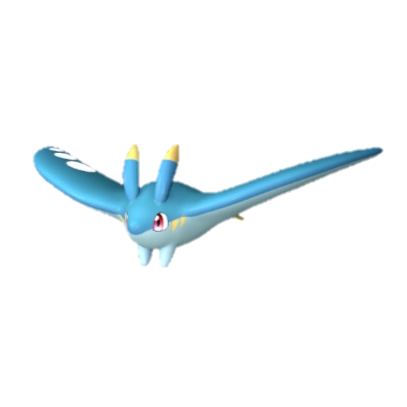
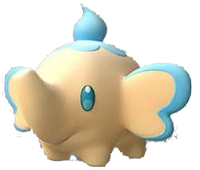
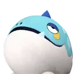
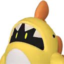
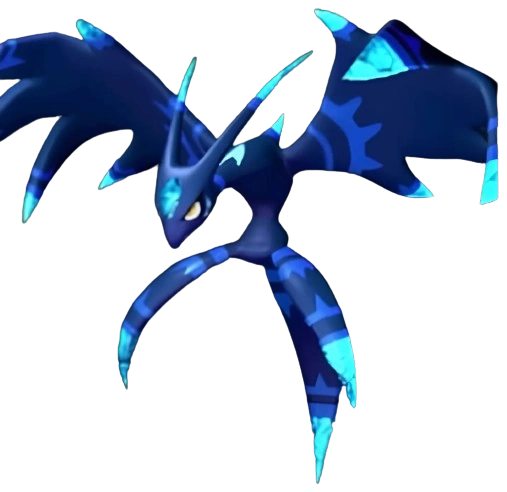
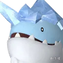
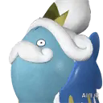
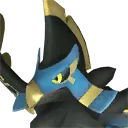
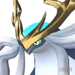
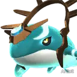

💧 All Water Pals in Palworld (1.0)
There are 48 water-element Pals in Palworld 1.0 — 17 can be caught in the wild and 31 are breed-only. Sorted by Paldeck number. Click any Pal for its full breeding guide.
Complete Water Pal list
| # | Pal | Element | Work suitability | How to get |
|---|---|---|---|---|
| #5 | Water | Watering 1, Handiwork 1, Transporting 1 | ✅ Wild | |
| #5 | Water/Fire | Kindling 2, Watering 2, Handiwork 1, Transporting 1 | 🥚 Breed only | |
| #7 |  Celaray | Water | Watering 1, Transporting 1 | ✅ Wild |
| #7 | Water/Electric | Electricity Generation 2, Watering 1, Transporting 1 | 🥚 Breed only | |
| #9 | Water | Watering 1, Handiwork 1, Gathering 1, Transporting 1 | ✅ Wild | |
| #9 | Water/Dark | Handiwork 2, Watering 1, Gathering 1, Transporting 1 | 🥚 Breed only | |
| #11 |  Teafant | Water | Watering 1 | ✅ Wild |
| #17 | Water/Ice | Watering 1, Handiwork 1, Cooling 1, Transporting 1 | ✅ Wild | |
| #17 | Water/Electric | Electricity Generation 2, Watering 1, Handiwork 1, Transporting 1 | 🥚 Breed only | |
| #18 | Water/Ice | Mining 3, Transporting 3, Watering 2, Handiwork 2, Cooling 2 | ✅ Wild | |
| #18 | Water/Electric | Electricity Generation 3, Mining 3, Transporting 3, Watering 2, Handiw | 🥚 Breed only | |
| #30 | Dark/Water | Transporting 2, Watering 1, Gathering 1 | ✅ Wild | |
| #30 | Neutral/Water | Transporting 2, Watering 1, Gathering 1 | 🥚 Breed only | |
| #37 | Water | Watering 2, Mining 1, Transporting 1 | 🥚 Breed only | |
| #37 | Water/Ground | Mining 3, Watering 2, Transporting 1 | 🥚 Breed only | |
| #41 | Water/Dragon | Watering 4 | ✅ Wild | |
| #43 | Water | Watering 1, Farming 1 | ✅ Wild | |
| #45 | Water | Watering 2, Handiwork 1, Transporting 1 | 🥚 Breed only | |
| #46 | Water/Dark | Watering 2, Handiwork 1, Medicine Production 1, Transporting 1 | 🥚 Breed only | |
| #47 | Water | Handiwork 2, Watering 1, Transporting 1 | 🥚 Breed only | |
| #48 | Water/Dark | Watering 2, Handiwork 2, Transporting 2 | 🥚 Breed only | |
| #48 | Water/Neutral | Watering 2, Handiwork 2, Transporting 2 | 🥚 Breed only | |
| #55 | Water | Watering 2, Handiwork 2, Transporting 1 | ✅ Wild | |
| #72 | Polapup | Ice/Water | Cooling 4, Watering 3 | 🥚 Breed only |
| #75 | Water | Watering 3, Farming 2 | ✅ Wild | |
| #83 | Dragon/Water | Watering 4, Lumbering 3 | ✅ Wild | |
| #86 |  Munchill | Ice/Water | Cooling 3, Watering 2, Transporting 1 | 🥚 Breed only |
| #88 |  Finsider | Water | Watering 2, Transporting 1 | 🥚 Breed only |
| #88 | Water/Fire | Kindling 2, Watering 2, Transporting 1 | 🥚 Breed only | |
| #93 | Grass/Water | Watering 5 | ✅ Wild | |
| #94 | Dragon/Water | Watering 3, Transporting 3 | ✅ Wild | |
| #97 | Dark/Water | Watering 5, Transporting 2 | 🥚 Breed only | |
| #97 | Fire/Water | Kindling 5, Watering 5, Transporting 2 | 🥚 Breed only | |
| #109 | Ground/Water | Watering 2, Mining 2, Transporting 1, Farming 1 | ✅ Wild | |
| #109 | Ground/Water | Farming 4, Watering 2, Mining 2, Transporting 1 | 🥚 Breed only | |
| #116 |  Suzaku Aqua | Water | Watering 6 | ✅ Wild |
| #121 | Dragon/Water | Watering 7 | ✅ Wild | |
| #128 | Water | Watering 4, Lumbering 4, Gathering 1 | 🥚 Breed only | |
| #128 | Water/Fire | Kindling 3, Lumbering 3, Watering 2, Gathering 2 | 🥚 Breed only | |
| #151 |  Whalaska | Ice/Water | Cooling 6, Watering 5 | 🥚 Breed only |
| #169 |  Solmora | Water | Watering 4 | 🥚 Breed only |
| #169 | Water/Electric | Electricity Generation 6, Watering 4 | 🥚 Breed only | |
| #175 | Grass/Water | Planting 7, Watering 5 | 🥚 Breed only | |
| #188 |  Faleris Aqua | Water | Watering 6, Transporting 5 | 🥚 Breed only |
| #192 | Dragon/Water | Watering 8, Gathering 5 | 🥚 Breed only | |
| #201 |  Neptilius | Water | Watering 7 | 🥚 Breed only |
| #203 |  Panthalus | Water | — | 🥚 Breed only |
| #10003 | Water | Transporting 1 | 🥚 Breed only |
🥚 Want a breed-only Pal? The PalTool reverse breeding calculator finds the shortest path from wild-catchable parents.
Work rankings: ⛏️ Mining · 🔥 Kindling · 🔨 Handiwork · 🪓 Lumbering · 📦 Transporting · 🌱 Planting · 💧 Watering · 🧺 Gathering · ⚡ Electricity Generation · 💊 Medicine Production · ❄️ Cooling · 🐄 Farming
Pals by element: 🔥 Fire · 💧 Water · 🌿 Grass · ⚡ Electric · ❄️ Ice · 🪨 Ground · 🌑 Dark · 🐉 Dragon · ⚪ Neutral
Data sourced from Palworld 1.0 game files. Last updated: July 2026.